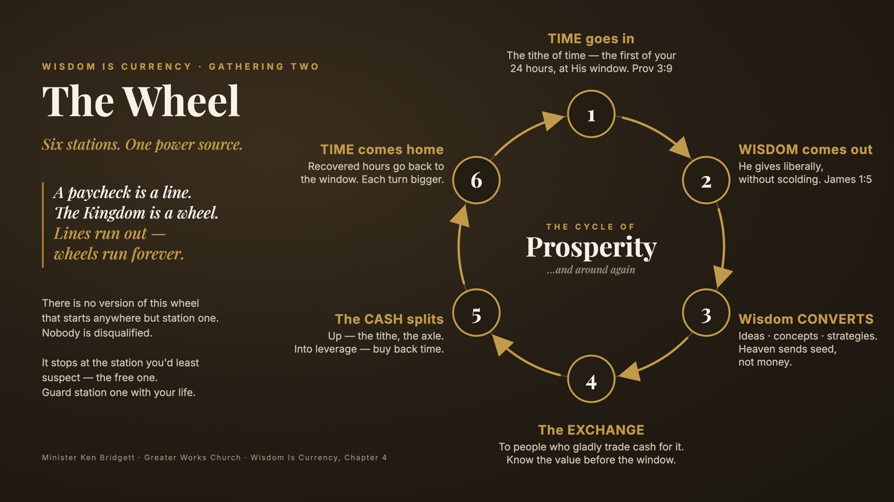

Wisdom Is Currency · Gathering Two · September 17, 2026
The Cycle of Prosperity — six stations, one power source. Clock In. And the gap between the idea and the harvest.
The full recording, 80 minutes. Passcode is built into the link.
Play the recording
The wheel from Thursday night. Save it. Draw your own and mark the station you're on.
Below is Minister Ken's teaching from the night, lightly edited so it reads clean. What members shared about their own week stays in the room — it isn't printed here. Timestamps match the recording.
0:07:57All right. So look, let's jump in here 'cause we're gonna try to cover a lot of ground real quick. Hopefully you guys had an opportunity to go back and look at last week, right? Last week we really laid the foundation about the wisdom is currency. I shared my testimony about how we got there, right? And so just for some of the people that are just jumping on, I'm gonna try to give this real quick. So what happened to me was about 10 years ago, God woke me up 3:00 in the morning. He asked me to go in the living room. He sat me down. It was completely dark. He asked me, "How do you master time?" I told him I didn't know. He said, "You master time for the believer as the same way you master money." I knew that meant, the tithe. He said, "Give me a tithe of your time and I will show you the secrets to mastering time," which I knew also meant tithe into wealth. As the old saying goes, "Money is time," right? And so, I, after doing some inventory, I knew that I did have the time that he was asking for. Of course, if we look at a tithe of the time, that's, two and a half hours, two hours 40 minutes if you wanna be technical. There's 24 hours in a day. And after analyzing, I said, "Man, you know, between work and sleep and my extracurricular activities," I knew that I had the time to give God the two and a half hours. I told him I would give him the two and a half hours, but for about five years I did everything other than what I told him I would do. I tried to go out. I was working a business and a job, and I was trying to do things my own way. And for a long time, I found myself almost working myself into the grave. One of the things that I did notice too during that five-year period is that, even though I was working 60, 70 hours a week and I was getting projects, it seemed like I was never really thriving. Like, I was surviving. I was having enough money to pay my bills, but I was never walking in the overflow. And I always noticed I never had time. As a matter of fact, it always seemed like I was kinda always in a catch-up, status. And so after going through that for about five years, I finally said, "God, I'm tired. I give up, and I'm gonna give you this two and a half hours." I started waking up 5:00 in the morning and splitting my two and a half hours between prayer and the word and also taking care of my temple through working out. After about, two weeks or so, God gave me my first idea, which was to start doing, head shots for $75. Didn't make sense to me. Didn't even wanna do it. But I knew I was speaking to him 'cause I had been spending time with him. I started, I obeyed the instructions that he gave me, and pretty quickly, I, working that idea, I realized I was making more money, it was taking me less time, and it was easier. And so I worked that thing for a while and then, I was also working that still giving him that two and a half hours, but I fell off. You know? Things started getting real good. The pay the money started getting real good. I started shaving off my two and a half hours, and it was almost like magic. Just as fast as everything blew up, it fell back down. And I was like, "God, why was that?" And so after that happened, I said, "Okay, well look, I wanna understand this thing. I wanna understand the mechanics of why it worked and I wanna understand the mechanics of why it didn't work." And so from there I spent about two hours, studying and really digging deep into the scripture, and one of the first scriptures he brought me to, is, Proverbs 3:15. It says, "Happy is the man who finds wisdom, and he who gains understanding, for her proceeds are greater than the profits of silver and her gain than gold. She is more profitable than silver, and all the things that can be compared cannot be compared to her." And as I was looking at that, I realized that when it was talking about wisdom, it was describing wisdom in financial terms. It was saying profit, gain, those type of things, right? And as I began to study it further, which again we're gonna get into this a little bit more, after studying I realized something, and this was the first main, big revelation. That wisdom is an actual currency. It is, a currency, of heaven. The Bible says, I think it's James 1:5 if I'm not mistaken, it says, "If any man lacks wisdom, let him ask of me and I will give liberally without reproach." So God is basically saying that if you simply ask him for wisdom, "I will give you as much as you want." Now why is that? Because again, if wisdom is the currency of heaven, nobody would have more of it than God. God has so much of it, in fact- That, you know, he basically, excuse the term, I don't wanna offend anybody, He makes it rain, right? God can pour out as much wisdom as we possibly can handle because He just has that much of it, right? But then I also began to study the mechanics of it, and what I realized was that what God was teaching me was a system, right? It was a system on how to be able to work this wisdom principle. And I'm gonna pause there for a second 'cause now we're gonna get into this week, this week's subject, right? Systems. System system. Let's talk about that for a minute, right? Systems are so important. When we talk about wealthy people, wealthy people, and I'm talking about wealthy people, right? Wealthy people own systems, right? They own duplicatable, repeatable processes that are profitable, and then once they figure out what's profitable, they learn then how to take that system and scale it, right? So you can take somebody who know- understands a system of, it's, which is again, it's a predictable way of doing things over and over and over and over again that leads to a consistent result, right? I'll give you a dumbed-down version of a system. You go to McDonald's. Anywhere you go to McDonald's, anywhere in the country, you're gonna find that if you go there looking for a Big Mac, anywhere in the country, a Big Mac in Florida is gonna taste like a Big Mac in Chicago. It's gonna taste like a Big Mac in Texas. Two all-beef patties, special sauce, lettuce, cheese, pickles, onions, on a sesame seed bun. McDonald's so systemized that they know exactly two pickles on it. They know how much ketchup. They know how long the bun. They have it figured out down to a system, right? Even the business of McDonald's, they've so systemized it that now they can actually turn that into a franchise, right? A franchise, one of the reasons why franchises normally are successful compared to other businesses is because franchises are able to give people a system, right? They tell you, "This is what you do. This is what you say. This is how you train employees. This is what the employees say. This is what you wear. This is how you advertise. This is what your profit margins should look like," right? "This is how you, what you order. This is what, how, what you should keep as far as your inventory." They have figured it out, right? And so they're able to now then go to someone and say, "Okay, look, you wanna buy this franchise, you pay 10, 15, 20," or in the case of McDonald's, "a quarter million dollars. We're gonna show you our system on how to actually be profitable." So systems are so important. And I'm gonna tell you, right now we're living in a time that allows us to be able to create systems in a way that we never would've been able to do before, right? And I'm gonna show you a couple things. I'm gonna share my screen here real quick. I'm gonna share. All right.
0:15:23No, let me minimize. All right, can you guys see my screen?
0:15:31I'm not talking too fast for you, am I? I'm, I, there's just a lot of information I wanna get through. Like I said, we're recording, so we'll, we'll be able to go through it. But I know all y'all are smart, so I know you're getting it. But, all right. So systems, right? So, about, maybe about a year and a half ago, there's a company called, Google, right? Google introduced a new software called, NanoBanana, right? NanoBanana allowed people to be able to create images, right? Some of you may use that now, right, where you can go on with AI, you can create images, right? And so when I saw, NanoBanana, and the ability to be able to create images... Now remember, I was already a photographer. I have a photography business, right? And so when I saw NanoBanana you could actually take and create images, like, just by putting in prompts, right? And when it first came out, people were crazy about it. Like, everybody was like, "Man, you know, I could, I could, I could create images of me in a Corvette, and I can create this, and I can create that," right? And I saw people, I saw them create the with this, with this NanoBanana. But again, remember, I've been spending time with God, so I'm seeking for wisdom, right? And so I was like, "Man, listen, I don't, I don't wanna just... I, they're treating this thing as a toy. I wanna take this and see if I can create a system." And so what I did, if you ever use NanoBanana, normally what you have to do is you put in a prompt. And the better you can put in a prompt, the better it can create an image, right? And so I said, "Man," I said, "but the problem is who wants to put in a prompt, the, you know, all the time?" And a lotta times when you put in these prompts, people are always changing the prompts, so they're never getting any real consistent, I they're never getting consistent images, right? So when I first saw it, again, God, spending time with God says, "No, you need to create a system around this." So I took some time, and so I created 20 different styles. And I said, "I want these styles to be m-" I got, I got 20 different prompts. Male prompt, female prompt, right? And I wanna be able to cut, copy, and paste. So this way I can get the same image generated, like, but basically I can use Dawn for, Dawn, Dietrich image for a reference. But it'll, it's gonna create the same image with Dawn's face, and then I could use the same prompt for Drea. I wanted to create a system, right? Because, just being able to just create it one time, you can't turn that into a business, right? Now, from there, and I'm kinda going through this real quickly. From there, later on, that idea turned from creating, copy and paste, where I could take those and put it, to then I said, "Well, listen, let's start creating an app." Now, I'm telling you this because- This app, I created this app. All right, this is a system. It's called, ironically, The Signature Branding System. I created a system so that people who need branding, images and systems, they can come in, they can do a headshot session, and right from that headshot session we can then take that and create a whole collection of branding images for them, right? And so, when you're able to do that, now I took one idea. Remember, this all started from Nano Banana. Everybody had access to Nano Banana, right? Everybody now have access to Nano Banana. But the difference is because of the fact that I had been spending time with God, specifically seeking Him for wisdom, God gave an idea and a strategy on how to be able to take that same thing that people are using now today and create a system that can be turned into cash, right? But this is the power of systems. Now, I'm showing you this for twofold. I'm showing you this because for one, this app, it took me a while of working on it, and I'm gonna be honest with you. I built this app, over about a six-month period. I, my intellect did not know what I was doing. I didn't. I... My intellect didn't understand it. I was following the spirit of wisdom that guided me through this and I created it. Now this thing is finished. I asked, Claude the other day, I said, "Man, you look at the Signature Branding app. If we were to be able to take the same app, and if I were to try to create this before AI, if I were to try to hire developers and a dev team, and all that different stuff," I said, "How much would it have taken really for me to do this prior to using AI?" Claude told me it would have probably taken me somewhere between, 900,000 to $1.6 million to be able to create this app, right? Now, why am I sharing that with you? We all have access to these tools, right? Everybody have access to these tools, right? The the information is there. We're using, AI, which stands for artificial intelligence. There is an abundance of intelligence, right? But what was lacking is the wisdom to be able to leverage the intelligence. Do you follow what I'm saying? Are we all on the same page? Talk to me, family. Talk to me.
0:20:55All right? So let's go. Let's do one more. So Signature, Sign- Signature... Signature Tow. We'll do that. All right? This is a product that I created. It's an AI answering service for tow companies. Now, I don't know anything about tow companies. I have... I don't have a clue about tow companies. But after spending time with God, He gave me an idea to start creating what they call is a AI answering service for tow companies. Tow companies have a problem. Most of these tow companies, they're individual owners. They don't, they're, they're answering their own phones. They're also doing the towing. And here's the thing. If they miss one call a day, the average tow price, tow job is like 200 bucks. So one call a day means they're missing about 200 and, they're missing $200 a day by missing that job, right? If a tow company miss one call a day, that's $200 a day. If you... That's $4,800 a month. That's 50 grand a year by missing one call. Most of these tow companies, they probably miss probably about four or five calls a day, right? So this is a major problem, right? God gave an idea. "All right, create an AI answering service." Had I done this before? No. But through following the wisdom principles, God began to show, "Okay, this is how you do," and you leverage the technologies that are available, right? We created a product. Now these guys can, for $290, $97 a month, they have a 24-hour dispatcher, right? They save two calls a month. The... It not only pays for itself, but it put money back into their pocket, right? This idea, the video, everything that you see was created with between wisdom and leveraging the technologies, right? So, I'm gonna show you one more. Signature.
0:22:59This is another product, all right? Again, I never did anything like this before, but God began to show me that insurance guys, after talking to people, they have issues. They, they... A lot of these life insurance guys, they're so busy. They they're, they're, they get a bunch of leads. They can't follow up with people. They don't really have any systems involved. Took a while. I created a system. Now, this product, you know, you charge people, what, $8,000 to install it, right? And then, and then they pay $2,000 a month to have this full system, right? Now, again, I'm, I'm not sharing this stuff to brag or boast. What I'm sharing this with you is I want you guys to understand that we have the, technologies in our hands right now that allow us to create things that we literally could not have created just two years ago, right? And there's an abundance of intelligence, right? There's an abundance of knowledge out there. What we need right now, though, is not just the abundance of intelligence and knowledge. We need the wisdom to know exactly what to build, how to build it, when to build it, and who to present it to, right? So this wisdom is currency pros- what we're talking about, we're not just talking about just spending time with God-... So that we can get ideas and concepts, right? We're talking about taking those ideas, concepts, strategies, and actually building some things, right? Y'all are gonna build some things with this, right? So that's why I'm sharing this whole thing with you, all right? So now we talked about that, let me bring this down and let me bring this up. All right. Can everybody see that?
0:24:50All right. Yes. So we're gonna slow it down a little bit now, all right? So last week we talked about the cycle of prosperity, right? And how this whole thing works, right? And what happens is when we work the system, 'cause just like we just finished talking about systems, right? The world has systems. This Wisdom Is Currency is a system, right? It's a system, okay? And you work the system, and we're gonna go through it step by step, right? This is the part that I didn't... It worked so fast, I didn't know why it worked, right? Until I stopped working the system, then it fell apart and I was like, "Okay, God. Tell me what's going on here," right? Let's break this thing down, all right? So remember we talked about the first thing God said, is, "Give me two and a half hours of your day, and I will show you the secrets to mastering time," right? That's exactly what He said. Now, why is that important? And why is that so powerful? It's powerful because everybody, the time that God gives us is free, right? Like, He literally, we wake up through His grace. He gives us the first thing that we need to get the system working. And the reason why I love that so is because when you understand this system, it doesn't matter if you don't have money. It doesn't matter if you don't have contacts. It doesn't matter if you don't have education. It doesn't matter, right? Because God says, again, "I'm gonna give you something everybody have." Now, here's the thing. We all have 24 hours in a day. Now, what do we do with that 24 hours? Completely up to us, right? There's gonna be some people, they're gonna look at this system, and immediately they're gonna start making excuses. "Oh, I don't have two... I don't, I don't have two and a half hours. I'm already so busy. I'm doing this, I'm doing that." But I guarantee you, if they take an inventory of their life, they can find two and a half hours to give to God if they want to, right? For most of us, and I ain't judging you, 'cause I got this problem myself. I'm still overcoming it, right? We get caught doom strolling on Facebook, Instagram, TikTok. That alone probably steals a hour and a half of our day, right? Before you know it, you look up, you're like, you just go in to check a comment. And before you know it, you're like, "I've been on this phone for about an hour and a half," right? I call it a time bandit. The point I'm making is that you have two and a half hours, all right? Now, I wanna put a little asterisk here, 'cause I don't want anybody to start thinking about this in a religious sense, right? The truth be told, and I'm giving you this early, the truth be told, it's not really about the amount of time. It's really not, right? It really isn't. What God is showing us what to do with this whole thing is He's teaching us a lifestyle, right? He's teaching us a lifestyle. And I don't know if I have some prayer warriors in here with me, but for the prayer warrior, you know you don't necessarily have to put two hours in to pray. Because there, every day, 10 minutes here, five minutes there. Driving in the car, that spirit rise up in you just speaking in tongues just driving there. You putting in time with God because that prayer has become a lifestyle. Do you understand what I'm saying? So I don't want you to get caught in religion, but we do need to start applying discipline for this. 'Cause again, it is a system, right? So let's say for now we're gonna give God that two and a half hours. Now, when we give God that two and a half hours, that puts you at station one. We call station one the window, all right? We call that the window, right? You're meeting God at the window. Now, why do we call it the window, all right? Because if we understand the principle, the way this whole thing works is we go to God and we're seeking God for wisdom, right? We're seeking Him for wisdom. Why can we do that? 'Cause again, James 1:5 says, "If any man lacks wisdom, let him ask of me. I'll give liberally without reproach," right? So we're spending, we're exchanging our time. Think about this in terms of an exchange. That's why we call it a window. Think about an exchange window. You go into another country, and you got cash, but they use Japanese yen. You gotta exchange your cash for Japanese yen, so we go to an exchange window, right? So station one is the window. That's the exchange window. That's where we're coming to God with our time and we're asking Him for wisdom and we're exchanging our time for wisdom, right? That moves us from station one to station two. We put, time goes in, wisdom comes out, right? We got that? Now, when wisdom comes out, here's what happens. Wisdom also goes through a conversion, right? Wisdom goes through a conversion. Wisdom is then converted into ideas, concepts, strategies, right? Remember, these are kingdom principles. When God wants to get a harvest to you, God does not give you fruit. God gives you a seed. Do you follow? You follow? God gives you a seed. So when we go to God, we're asking Him for wisdom. God will then give us the wisdom. That wisdom is then converted into ideas-... Concepts, strategies. That is our seed, right? Now, we have to nurture that seed like anything else. Those ideas, those concepts, those strategies. We have to nurture that seed. That's where we begin to develop those ideas, concepts, strategies. That's when we begin to water those ideas, concepts, strategies. That's when we begin to write the idea and the vision and make it plain. That's when we begin to seek God. God, you gave me an idea. What do I need to do? Who do I need to con connect with? With- what products do I... What technologies do I need to learn, right? Because now what we're doing is we're taking that idea, that thing that was wisdom, converted to ideas, concepts, strategies, now we're developing that into something that is, has a value, right? So again, my own example, right? With the AI. I saw, I saw the, I saw the... They were using this Nano Banana to create. I said, "God, I give me wisdom on how I can leverage that," right? God then gave an, gave a plan to take that, and create, a system of prompts, and then that system of prompts then became, then became a, an app. And look, and let me tell you what happened. Remember I told you before how this whole thing started, was God gave me the first idea was to do the head shots for $75? Remember I said that? Right? Three images for $75 was what He told me to do, right? I started working that idea. Before I knew it, that idea was making me more money and took me less time, right? Now watch what happened. From there, when time kept moving forward, what happened was that idea continued to produce fruit. I didn't realize it initially, but with the AI, what happened was then I was able to take that idea, turn that into a system, turn that system into an app, and now what happens is when I go do a head shot with somebody, right? And I do the same thing today that I, that He gave me 10 years ago. I do the same three images, $75. It still works, right? And but now, guess what? I now turn to that same client and say, "Okay, look, we just took your head shots for you know, and we got these great images. If you like, for an additional $97, I can now take those head shot images and turn it into a whole collection of branding images." Now watch what happened. That doesn't now I have a system, right? So now I took somebody who was a $75 head shot client, turned it into $175 sale. You know how what it costs me to be able to generate 200 images through this system? $8. And it don't take me no time, right? Right? So that one idea, which was 75, continued to grow. It continued to produce fruit that continued to produce more seed that turned into more systems. Do y'all follow what I'm saying? Are y'all picking up what I'm putting down?
0:33:41Talk to me, talk to me. Y'all picking up what I'm putting down?
0:33:45All right. Which go, which leads me right into stage four, right? So again, let's backtrack a bit. We were at the window. We exchanged our time for wisdom, right? And then we, then God gave us the wisdom in window, two. That's what came out. That wisdom being converted to ideas, concepts, strategies. That idea, concept, strategies, we, when we nurtured it, turned into something, a product, an idea, a strategy, a system, a solution, right? That people were then willing to exchange their dollars for, right? Do you follow? People now are willing to exchange, pay that extra $100. Why? Because now I can give them 200 images. That means they don't have to go do another photo shoot. That means they don't have to go buy a whole 'nother wardrobe. That means they don't have to go get their hair done. Now they can get all these multiple images for $100. It was an idea that came to me, but now these people are willing to exchange their dollars for the idea, concept, strategy that I got because of the wisdom. Do we follow? Do we follow? So if you watch what happened, wisdom then became cash through the system, right? And that's where most believers miss it. That's where we miss it. Sometimes we come to God asking for a solution, and we want Him to just give us the money, right? And God says, "Yeah, I can just give you the money," right? "Or I can give you a system that's duplicatable, that you can own, and then you can take that system and create as much money as you want." You follow what I'm saying? God is a god of multiplication, not addition, right? All right. So time became wisdom. Wisdom became ideas, concepts, strategies. Those ideas, concepts, strategies became products, ideas, solutions that people then were willing to exchange their cash for our ideas, concepts, strategies, right? So now we're in a position where we have cash. Now, what do we do? What we should do is we take part of that cash, we work kingdom economics. Part of that, we put it back into the kingdom. God says, "Give and it shall be given to you. Press down, shaken together, runneth over, shall men give into your bosom," right? It's seed time, harvest time. So part of our cash, if you're smart, just like we're giving Him a 10 of the, a tithe at a time, you should put a tithe back into the kingdom. In addition to putting, paying your tithe and offering, what you should also do is leverage that cash to buy more systems, right? Now, how do we buy more systems? We buy more systems by buying, investing in technologies. We buy more systems by hiring people and teaching them a set way of doing things, and we're exchanging, we're leveraging our cash, and we're buying their time, right? We're, we're using our cash, right? We're buying their time, which then means we're further leveraging our cash, right? And now we can buy systems, and a system should do something for us. It should buy us back more time. Do you follow what I'm saying? I still do branding sessions whenever somebody asks for them, right? I... In-person branding sessions. I still do them every now and then, but guess what? When I do a branding session now, I tell them, "Look, I'm, I don't wanna do a branding session. If I do, like, a basic branding session, it has to start at $500, right? A full branding session, that's $1,500, right? Or you can do my AI product and it's just $97." Why? Because the... If I do an in-person session, I gotta go, I gotta get a location, I gotta meet you, I gotta talk to you, I gotta get this, I gotta do that. We gotta edit, we gotta do all those That's my time, right? It's a lot of time for that. But, or I created a system that now, you know, look, 100 bucks takes me about five minutes in the system, right? So we use our cash to buy more time. Now that we have more time, what do we do? That gives us time for our family. That gives us time for ourself. Most importantly, that gives us time to do what? Repeat the cycle. Give God back more time, right? And it should be the desire of every believer to spend as much time with God as he would like, and then have the freedom to do whatever he tells us to do. I think for a believer, that should be the goal for every believer, to be able to spend as much time with God as he would like, and then have the freedom. And when we're talking about freedom, we're talking about the time freedom, the money freedom, the health freedom, right? That's why with Wisdom Is Currency, that's why we define wealth as balance between God, health, relationship, time freedom, and finances. That's the whole man, right? And so what this cycle does is it creates a cycle of prosperity where now it creates a system where, again, we're free to do whatever God wants us to do and have the resources to do it. Amen. Everybody getting this?
0:39:29We're, we're getting... All right. I wanna pause a little bit, right?
0:39:34And let's talk about it. Let's talk about it. Let's talk about it. All right. Questions? Thoughts? Let's share. What do you guys got?
0:40:46Love that. I love that. Now let me, let me... Let's take a moment, 'cause that's a an awesome learning moment, right? Because you said a couple very powerful things. The first thing you said was understanding value, right? And I'm gonna tell y'all, this is kind of going into our next sec, segment. One of the lessons that I had learned was we... In order for this to work, you have to understand the value of the wisdom. If you do not understand the value of the wisdom, this does not work. Now, when I say it does not work, meaning you will get ideas, you will get concepts, you'll get strategies, but what happens is when it comes time to do the exchange here, when it comes to this part right here, what will happen is if you do not value the wisdom properly, you'll find yourself literally giving away the ideas, concepts, and strategies. And when you go to make an exchange, what will happen is you don't have to steal anything from a man who don't know their value. And if you try to bring your ideas, concepts, and strategies to the marketplace, and you don't know the value of your ideas, concepts, and strategies, then the world will give you the price that they think is fair, right? And what... And many believers, many believers, what happens here is whether they understand this system or not, they've been instinctively working-... This system. They've been spending time with God, they've been seeking God for wisdom. God been giving them ideas, He been giving them concepts, He been giving them strategies. But what's been happening is a lot of believers think that because God gave them an idea, concept, and strategy, that God then wants them to just give it away, right? And that ain't the, that's not true. It's not true at all, right? As a matter of fact, when God gives you something, He expects for that thing that He gives you to be able to provide for yourself and your family, right? I'll even take it this far, that the Bible says that a man, and this could be a woman, that does not provide for his own is worse than an infidel, right? And so you think you're super spiritual because all these ideas, "I'm just, I just wanna give it away. I wanna give it away, and I wanna even if I don't give it away, I so undervalue it that I don't get an exchange from it," right? And that's not God's will for our life. It's not God's will. Even if, and again, this is something I just learned, so I'm, I'm telling... Let me, let me sidebar for a second. Sidebar. Sidebar. As I'm explaining this stuff to y'all, I want y'all to understand that I am still learning this stuff and mastering this stuff every day. I am not talking to you from a position of I have mastered this, and a and ooh, you know, my bank account is running over, 'cause it ain't, right? I'm telling you, I know that this works, right? And as I'm talking to y'all, and as I'm, I'm sharing these truth, it cuts me as much as it cuts y'all, right? And as y'all are building, I am building, too, right? But here's the truth. The truth is just the truth, right? This is the truth. This is how God wants us to live, right? And understanding the value of what you're bringing to the table is one of the hardest lessons that I had to learn. So much so that I'ma tell you what happened. I had a dream, and this wasn't that long ago. I had a dream, and in the dream, I was, I was working on a job. And I was doing the job, I was doing it, I was doing it well, right? I was doing it real well. And then, after a after a while, I said to myself, I said, "Man," I said, "I need to, I need to go, I need to go figure out what my paycheck was going to be," right? This was a dream. I said, "I need to figure out what my paycheck was going to be." And so when I thought about that, I said, "Wait a minute." I thought about it. I said, "I've been working, and working hard, but I never clocked in." Like, it came to I realized I had been working on this job faithfully, but I never clocked in, right? So even though I was doing the effort and everything, I had never put myself in a position to really reap the benefit from all the work that I was doing. And I woke up, and God said, "This is what it's like for somebody to work these principles and never understand their value." It's like you're doing the activity, but you're never clocking in, right? That, I don't know if that does something in your belly, but when I got that, I almost cried, because I realized for so long I had these ideas, I had these concepts. And because they came so frequently and so easy, to me it came so easy. Even the photography. Photography for me, it came so easy to me that I always under- I always undercharge for it, because it came so easy. But what I realized later on, that really what I was doing was I was insulting God, right? And I'm gonna help you here. I'm gonna help you here, right? Because when you get this, you understand that the value of the wisdom has its value because of who it comes from, right? When we're spending time with the most high God, right? And we're seeking God for wisdom, God is literally giving us a piece of himself, right? When we're spending that time. He's giving you a piece of himself, right? That's really what we're getting. We're He's giving a piece. Now, what is a piece of God worth? Even a sliver of God, even an ounce of God, what is that worth, right? The Bible says, w what profit is a man to gain the whole world and lose his soul? So the Bible says that one soul is worth, all the riches of the earth, right? And we're talking about the giver of our soul, right? The creator of our soul. When we're seeking him for wisdom, he's literally giving us a piece of him, right? And so we should value that wisdom so much more because of who it gave it to. I was telling, I think I told my brother, Apostle Scott, we did the analogy. If I can give you a pen, I can give you a pen, and that pen to you probably is worth a dollar. But if your mother, who passed away, gave you a pen, that same pen now has more value. Why? Because who gave it to you, right? It has a higher value. It's not just a pen anymore, right? This is something that my mother out of her love gave to me, right? So now I wouldn't trade this for $10,000. I wouldn't trade this for $100,000. Now a regular pen you would, but because who it came, the value of it is different, right? So we have to look at it the same way. And if you're understanding what I'm saying right now, if you really understand what I'm saying, this is, this is what's gonna help turn this from a transactional relationship, right? Because the wisdom is currency is not a transactional relationship. When you look at it, because it's a system, okay, I change time for wisdom comes out, wisdom will come, right? It looks like a transactional relationship. Really, if you understand this is worship. Ha, hallelujah, this is worship. If you really understand it, this is worship. This is seeking God, having him impart with you're communing with him, you're talking with him, he's talking to you, he's imparting with you, and now that thing that he imparted in you now begin to spend time meditating on it, right? Thinking about it. That's why when and we're gonna get into this more, when you talk about wisdom, it... Even that scripture where it says, "Happy is the man who finds wisdom and he who gains understanding," right? It talks about wisdom in feminine terms. We'll talk about that more later on, right? But wisdom is an essence. Wisdom is a presence. Wisdom is something that the Bible teaches us we should fall in love with wisdom, right? Wisdom is a principle thing, right? So when we're spending time with wisdom, even in that prayer time, it's not a matter of just looking at my clock, "All right, that's two hours." No. Because then again it becomes transactional. In that two hours, it's time of saying, "God, I empty myself up in wisdom. I invite you in to come in with me, and I wanna talk with you, I wanna love on you, I wanna learn you. I want you to speak to me, and I wanna tell you how awesome you are. The wisdom, there is nothing like you. You are beautiful, you are..." It, again, this is worship now. Do you understand what I'm saying? Is this, is this connecting with y'all?
0:50:55All right. There we go, right? And so when... And now from that place, now you operate different because now when you, when that wisdom converts to ideas, concepts, strategies, now it's, "Oh, man, listen to what my God birthed through me from giving me his wisdom." Now it gains it has value, right? And now when you go to exchange it, what happens is now you can set the value of what you exchange for it, right? Now, you may, like he told me, to... He said, "Give the head shots three images for $75," right? That didn't make sense to me, right? Right. And some people say, "Well, Ken, doesn't that mean that you're, you're, you're taking less?" Because I know people do head shots for $500, right? Right. But the difference is I set the value. I didn't let somebody come in and tell me the value, right? I set the value based off the revelation that God gave me. Do you follow what I'm saying? So this whole thing, this whole cycle, it's, it's, it what we're talking about is it not only is going to give you the wisdom, but this is going to repair something that most of us, including I, deal with, which is our own self-worth right? Our own self-worth. Many people don't tap into who they are, who they're supposed to be, because they have a low sense of self-worth, and that low sense of self-worth manifests itself in a lot of different ways. It may mean sometimes they stay on a job that doesn't appreciate them far longer than what they should. Sometimes it means they have all these ideas that they never really capitalize and execute on. Sometimes it means that they constantly always underprice themselves, right? It all those things matter, right? But you have to understand the value of the wisdom. That's why at the top of this class, I don't know if everybody was there, I told you guys one of the things that God birthed when he was sharing with me, I created a platform called the Vision Execution System, which is what I'm, I'm, I'm giving to you guys, right? Now, that Vision Execution System is $1,500, for, to get someone set up, and then I offer consultation for $500 a month. I'm not charging you guys nothing, right? What I'm saying is I'm laying that value out because I understand that now if I choose to plant a seed in you with my time, with my idea, with my concept, my strategy, I'm still honoring the value, right? So I say, "Okay, shoot, it's, it's 10 people on this line," I just planted $15,000 worth of seed. And the way this principle works, seed time, harvest time never fails, right? So what I'm saying is when you understand this, am I saying never give your yourself away? Never seed into... No, that's not what I'm saying at all, right? What I'm saying is if you give it away, if you do it with the revelation of its value, but don't just in your mind just dismiss it as being free. Because if you do that, not only are you undervaluing yourself, you're undervaluing the giver of the wisdom.
0:54:39Awesome. All right, so let me, let me stop sharing here. All right, and, let me ch-
0:54:51Stop the share. Nope, I just stopped it already. Perfect. All right, so, let's talk about, last week, you guys had an assignment which was to, get to the first window, right? And that's the exchanging of the time. I know Sister Dawn Dietrich, mentioned she started practicing that. And again, there's no, there's no pointing of no finger, there's none of that, right? Because I told you already, God gave me the idea. I... It took me five years to get it right? But who this week started exercising that principle in addition to Sister Dawn Dietrich?
0:55:46All right, good. Good good. Very good. All right. So, this week the assignment is the same thing, right? Continue to write it down. Where we're going is on, October 1st, we're gonna do our seven-day challenge, and what we're then gonna do is, I believe between now and then, God is gonna hone those ideas in, 'cause you're gonna continue to seeking for wisdom, right? And then on October 1st, we're then going to ri-out, write out, an executionable plan, right? On exactly what we're gonna be building, right? And then once we get the plan, everybody's clear, then the next phase of it is we go into build mode. That's when we start learning the skills. We're gonna start learning the AI, we're gonna start learning about websites and all these different things, or whatever else that's necessary for you to be able to build that idea concept strategy to a point where people, man, is willing to exchange their cash for your ideas-
0:57:02Awesome. Awesome. All right. So, that being said, let me also just leave you with one final thing.
0:57:20There may be a season that you're going to go through where there's gonna feel like a gap between the idea concept strategy and the manifestation, right? There's gonna be a gap. I personally believe that a lot of you, that gap is-
0:57:43... Is gonna be minimized. I do. But what I also want you to go and prepare is when God gives us these ideas concept strategies, and we go on the process of bringing it to manifestation, that process that we go to is designed to produce something in us, right? It's designed to produce character, it's designed to produce endurance, it's designed to produce the fruits of the spirit, right? And so, I'm saying this to you, ahead of time. Some of you are getting, gonna get the idea and it's gonna be valid, and it's gonna be God. It may take six months. It may take a year, right? You may go through the ups and the downs and all these different things, because what I've learned, God is really more concerned about perfecting us as people, right? Now, some of you, I think some of you, the ideas is gonna come and it's gonna manifest fast, right? Some of you, it's gonna be part of that process, right? Anticipate that going in, right? Anticipate it going in. Remember, this whole thing that we're talking about, the whole real thing, the whole purpose of this, is really about drawing you closer to God. That's really what this is all about, right? And what God wants to make sure is by the time you have everything that He promised, that He showed you, He wanna make sure that your character, your spirit, your mind, your will, your body, is in a position to maintain it, right? And I'm telling you that f- 'cause again, He gave me this 10 years ago, right? And now I didn't know it would take 10 years to really be able to get here, right? I don't think it's gonna take 10 years for y'all. I think, I think, I think I really believe, I believe, and this is my personal belief, I believe that because I was willing to go through that process, I believe part of my inheritance is I'm gonna be able to see many of your dreams and visions be birthed fast. I believe that's gonna be part of my personal inheritance, right? And so but I do want you to understand that this whole thing is about a relationship. We're working the mechanics, but at the end of the day, it's about developing and deepening your relationship with Him. That's really what we're after, all right?
1:16:57No? All right. So, again, the assignment, the same, the same assignment, guys. Spend time, and, like Sister Dawn said, it's not about the amount of time, it really isn't. But, if you do that extra, if you, if you do that extra, just think about it again, the more time you spend with Him, the more wisdom He's gonna pour out, right? That's just the way it works, right? But spend time, and like we said, just to recap,.. Yes Sister Dawn, I appreciate you jumping on. We'll connect with you. Don't just spend the time, but spend time with the revelation of the value of the wisdom because you understand where it's coming from, right? Document everything, and then, next, Thursday we're gonna get back, together for the third part of the foundation, and then that's gonna position us, for October 1st to do our seven-day challenge. And then from there we're gonna shift into build mode. All right?
1:18:07Sounds good? All right, family, so that's it. Any last thoughts before we go?
1:18:18No? All right. So Father, we just thank You for Your presence. We thank Your wisdom, for just coming in and sitting on this, Zoom with us, Father. I know, Father God, that You're already at work, Lord. And Father, I pray that everybody that's heard, even the ones that are gonna go back and listen to this recording, Lord, I pray that You're gonna meet them exactly where they are. Stir up the gifting, give them visions, give them ideas, Lord God, and do it speedily, Father. Father, I pray for divine protection over everybody that's here. Bring, watch over them and bring us back at the next appointed time. And Father, we pray that everything that we're doing, everything that we're saying, we pray that it be pleasing to You, and we pray that it brings You glory. To You alone belongs the glory, so we thank You. In Jesus' name we pray, amen. Good to go, fam?
1. Keep the window — the same tithe of time. Nothing starts anywhere else.
2. Draw the wheel yourself and put an X on the station you're on.
3. Every evening: "I showed up today — but did I clock in?" Bring one honest answer back Thursday.